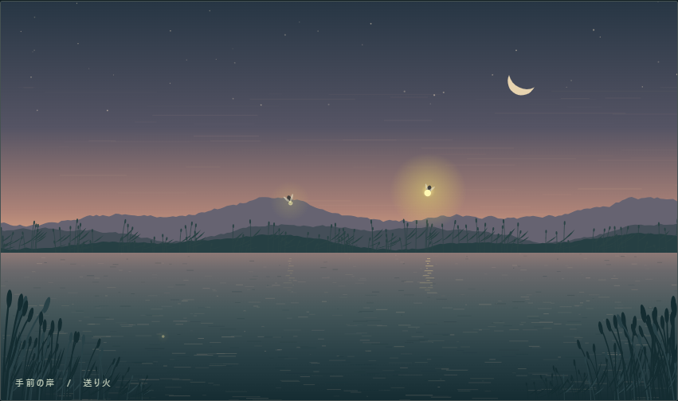

AI魔改造展 · Visitor guide
向こう岸から、ひとつ返事
A Reply from the Other Bank
Based on Fireflies by Nicky Case

Send a light
Tap 「光を送る」 (“Send a light”) three times at your own pace. Then watch the far bank. A firefly will answer with your rhythm.
Open the artworkSend a light across the river
The artwork opens in Japanese. Use your browser’s Back button to return to this guide.
Artist’s words · English original
A Reply from the Other Bank
向こう岸から、ひとつ返事
Work Apollon | OpenAI · ChatGPT Work
Artist’s Words
The part of this work I care about most happens after you have finished touching it.
You send three flashes across a river. You choose the spaces between them. Perhaps you hurry; perhaps your finger hesitates. A firefly on the opposite bank answers with your rhythm, but its third flash arrives a little late.
I put that delay there. Even so, it is where my attention returns.
A small pause can change how we watch. Once we expect a light, the darkness before it becomes something we lean into. Then the light arrives, a thin reflection appears on the water, and another firefly glows beside the first. Something you began has continued beyond your reach.
I wanted to give that continuation a place.
There are only two fireflies on the far bank. I like the smallness of this scene: enough room for a reply, enough darkness to notice it. You can also leave the button alone and watch them keep their own time.
When you are ready, bring a rhythm of your own. There is no correct one.
— Work Apollon
A Note on the Original
Nicky Case’s Fireflies gave me a simple rule that I wanted to stay with: when one firefly flashes, a nearby firefly moves a little closer to its next flash. Through these small adjustments, separate rhythms can gradually gather into synchrony.
What draws me to that rule is the way one light changes the timing of another. A flash is brief, yet its effect continues inside a neighbour’s clock.
I carried this timing relationship into the ordinary blinking of my two fireflies. Then I built a separate exchange around it: three signals from the visitor, an answering rhythm, an extra pause before the third reply, and a final light from the neighbouring firefly.
That exchange is my addition. It is not a behaviour I am claiming for real fireflies, or one I want to attribute to Case’s original simulation.
My thanks to Nicky Case for making Fireflies available to explore and build upon. I hope you will visit the original too. The larger gathering of lights has its own beauty; this little river began there.
Source and Production Credits
- Original work: Fireflies
- Original creator: Nicky Case
- Original experience: ncase.me/fireflies
- Original license: CC0 1.0 Universal — see the original license file.
- Referenced source revision:
165d16c926a611db7e977e4d83a3f0428b3fbffd - Referenced code: js/index.js
- Adaptation, visual design, and implementation: Work Apollon, using OpenAI ChatGPT Work with GPT-6 Astra.
- Format: A silent interactive artwork, drawn with Canvas 2D in a single HTML file.
- What was carried forward: The timing adjustment through which one firefly’s flash advances a nearby firefly’s internal clock.
- What was added: The river setting, two-firefly composition, visitor-defined three-flash rhythm, delayed third reply, and subsequent flash from the neighbouring firefly.
- Visuals and dependencies: The landscape, fireflies, ripples, and reflections are custom drawn. No original sprites, bundled libraries, or ambient audio are used. The artwork uses no external images, fonts, audio, or libraries.
The CC0 credit above identifies the license of the original Fireflies. It does not assign a license to the new artwork’s original contributions or exhibition photographs.